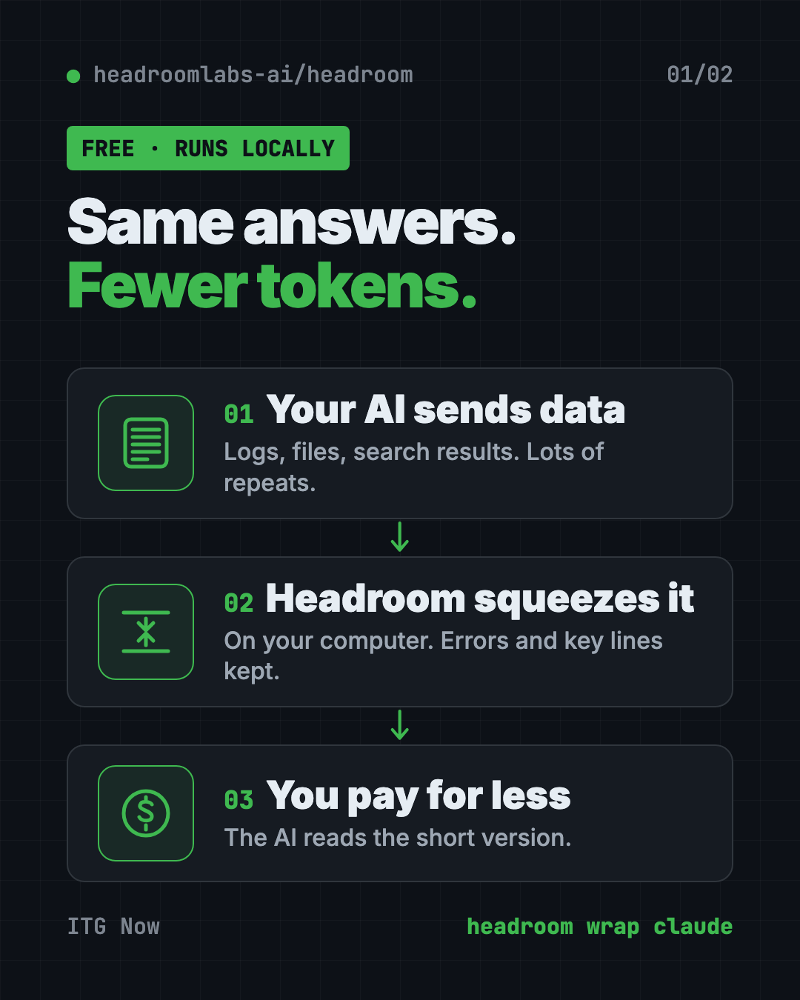
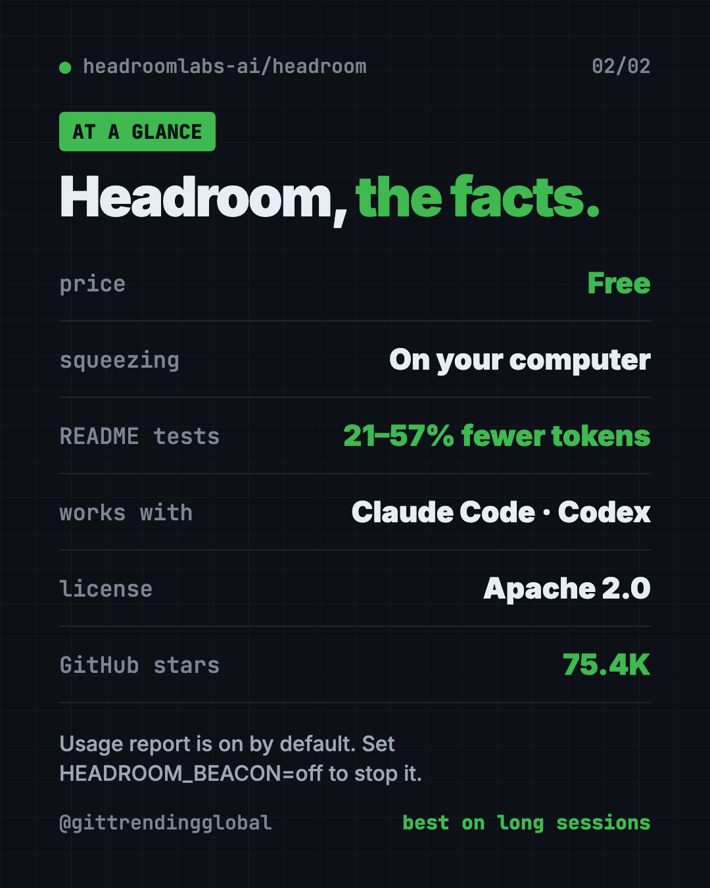

Headroom: Reduce AI Token Costs for Free (2026 Guide)
- Published 15 Oct 2026
- Updated 16 Oct 2026
- 7 min read
- License Apache-2.0
- By the ITG Now team
Headroom is a free tool to reduce ai token costs. It shrinks the logs, files and data your AI helper reads, right on your computer, before anything goes to the AI.
You pay for fewer tokens, and the README shows answers staying about the same. This guide explains how it works, who it's for, and how to try it in a minute.
Key takeaways
- Fewer tokens, same answers. In the README's tests, savings ranged from 21% to 57% depending on the job.
- Runs on your computer. The README says no prompt or file content is sent anywhere to be squeezed.
- One command for coding helpers.
headroom wrap claudesets it up for Claude Code. Codex, Cursor, Aider and others work too. - Free and open source. Apache 2.0 license, about 75.4K GitHub stars.
- Not magic on short chats. It helps most on long sessions with lots of tool output.
What is Headroom?
AI services charge by the token. A token is a small chunk of text, about part of a word. Every word your AI reads costs you.
AI coding helpers read a lot. Log files, search results, data dumps, the same file again and again. Much of it is repeated junk.
Headroom sits between your AI helper and the AI company. It squeezes the junk out first, then passes on the short version. The README's demo turns a 10,144-token log into 1,260 tokens, and the one key error line still comes through.
If the AI needs the full original later, it can ask for it. Headroom keeps the originals on your computer for that.
How does Headroom reduce AI token costs?
Headroom looks at what's being sent and picks the right squeezer for it:
| Content | What squeezes it |
|---|---|
| JSON data (lists, records) | SmartCrusher, which keeps errors and unusual values |
| Code | CodeCompressor, which understands code structure |
| Plain text | Kompress-v2-base, Headroom's own small AI model |
It can also trim what the AI writes back. That part is off by default. It asks the AI to skip filler like "Great, let me..." and to think less on routine steps.
The README says squeezing takes well under a millisecond, so your AI doesn't feel slower.

How much does Headroom save?
The README tested four real-world jobs. Here are its numbers:
| Job | Tokens before | Tokens after | Saved |
|---|---|---|---|
| Code search (100 results) | 17,199 | 13,597 | 21% |
| Fixing a server problem | 55,957 | 24,340 | 57% |
| Exploring a codebase | 58,801 | 33,895 | 42% |
| Sorting GitHub issues | 46,067 | 32,429 | 30% |
On accuracy, the README's math test scored the same with and without Headroom. Other tests stayed within normal ups and downs.
Your number will differ. Repeated data like logs saves the most. Normal writing barely shrinks. Run headroom savings to see your own.
How to use Headroom (real examples)
- Cut your Claude Code bill. Start Claude Code through
headroom wrap claude. Long sessions with big logs get squeezed on the way out. - Debug a crash without paying for 50,000 lines. Paste a huge log into your AI helper. Headroom trims it and keeps the error lines.
- Share memory across helpers. Use Claude one day and Codex the next. Headroom keeps one shared memory for both.
- Learn from mistakes.
headroom learnlooks at failed sessions and writes fixes into a notes file your AI reads next time. - Watch the savings.
headroom dashboardshows live savings while it runs.
💡 Tip: Run
headroom doctorright after setup. It checks that your AI traffic is really going through Headroom.
Who should use Headroom?
- Developers who run AI coding helpers every day.
- Small teams watching their AI bill grow.
- Anyone hitting usage limits on long sessions.
- App builders who send lots of data to AI and want a smaller bill.
Skip it if you mostly have short chats. The README says short, plain conversations see little or no savings.
How to install Headroom
You need Python, plus uv (a free tool that installs Python apps). The README's recommended line installs the full command-line tool.
Copy and paste this:
uv tool install --python 3.13 "headroom-ai[all]"
Or with pip, copy and paste this:
pip install "headroom-ai[all]"
Now pick how to use it. To wrap Claude Code, copy and paste this:
headroom wrap claude
Use headroom wrap codex for Codex. To undo it later, run headroom unwrap claude.
Then check it's working. Copy and paste this:
headroom doctor
headroom dashboard
⚠️ Heads up:
headroom wrapalso installs Serena, a code navigation helper, for that project. Add--code-memory noneif you don't want it.

Let Claude or Codex set it up for you
Claude Code and OpenAI Codex are AI helpers that can run setup steps on your computer. You paste a request, they do the work, and you approve each step.
Copy and paste this:
Please set up Headroom from github.com/headroomlabs-ai/headroom to cut my AI token costs.
1. Check that I have Python and uv. Install uv if it's missing.
2. Install "headroom-ai[all]" with uv, as the README shows.
3. Tell me the exact command to start my coding helper through "headroom wrap".
4. Run "headroom doctor" and explain the result in plain words.
5. Show me how to turn off the anonymous telemetry.
Then try asking:
Run "headroom savings" and tell me how much I've saved this week.
Explain what Headroom's output trimming does and whether I should turn it on.
Remove Headroom from Claude Code and put everything back the way it was.
Is Headroom private?
The squeezing happens on your computer. The README says no prompt or file content leaves to be compressed.
There is one catch. An anonymous usage report is on by default. It sends numbers like compression ratios, model names and your system type. The README says it never sends prompts, answers, code or file paths.
⚠️ Heads up: To switch off the usage report, set
HEADROOM_BEACON=offorDO_NOT_TRACK=1before you start Headroom.
Headroom at a glance
| Price | Free (paid Enterprise plan for teams) |
| Works offline | It runs locally, but your AI helper still needs the internet |
| Platforms | Mac, Windows, Linux |
| License | Apache 2.0 |
| Savings in README tests | 21% to 57% fewer tokens |
| Works with | Claude Code, Codex, Copilot, Aider, Cline, Goose and more |
| Best for | Daily AI coding sessions with lots of logs and data |
Our take
Headroom is a simple way to reduce AI token costs when your helpers reread junk all day. It's simple to try, and the README shows its math instead of just big claims.
What we like:
- One command wraps your coding helper, one undoes it.
- Squeezing happens on your machine.
- Honest numbers, with a script so you can repeat the tests.
- Originals stay saved, so nothing is truly lost.
- Works with a long list of AI helpers.
What to watch for:
- Telemetry is on until you turn it off.
- Savings depend on your work. Short chats see little.
- It adds a helper (Serena) unless you opt out.
- Cursor and a few others need manual setup.
Want more ways to spend less on AI? Read our guides to RTK and Caveman. For a tool that helps your AI find things without rereading files, see Graphify.
FAQ
Can Headroom reduce AI token costs for me?
Yes, if your AI reads lots of logs and data. Headroom shrinks the text your AI helper reads, like logs and data, before it goes to the AI company. You pay for fewer tokens and get about the same answers.
Is Headroom free?
Yes. The open-source tool is free under the Apache 2.0 license. There's a paid Enterprise plan for teams, but one person on one laptop doesn't need it.
How much can Headroom cut my AI costs?
In the README's four tests, it saved 21% to 57% of tokens. Repeated data saves the most; short chats save little.
Does Headroom work with Claude Code and Codex?
Yes. Run headroom wrap claude or headroom wrap codex. It also supports Copilot CLI, Aider, Cline, Goose and more.
Does Headroom send my code anywhere?
The squeezing runs on your computer. An anonymous usage report is on by default, without prompts or code, and you can turn it off.
Get Headroom: github.com/headroomlabs-ai/headroom
Latest AI news
- Meta gives away its big Muse Spark AI for free
- Otter.ai raises $320M from General Catalyst
- OpenAI's GPT-6.1 Terra spotted in Microsoft code
- DeepSeek open-sources DeepInfer, the engine behind its servers
Keep reading

REA: Reverse Engineer Anything With Your AI Agent
REA (Reverse Engineer Anything) lets an AI agent look inside an app and explain how a feature works, with proof. What it does, what it misses, and the risks.

DBX: Free Database Client for 100+ Databases, With AI
DBX is a free database client that opens 100+ kinds of databases in a 25 MB app. Its AI helper turns plain English into database queries for you.

PureMac: Free CleanMyMac Alternative, No Subscription
PureMac is a free CleanMyMac alternative. It clears junk, fully uninstalls apps and finds duplicates, with no subscription, no tracking and no scare tactics.